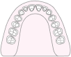
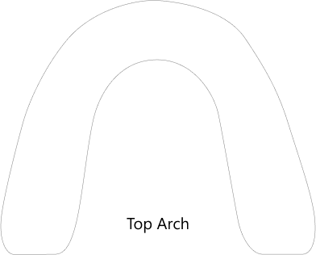
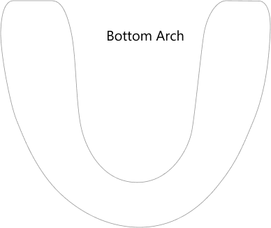
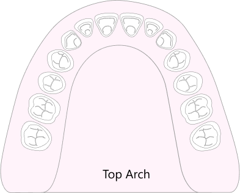
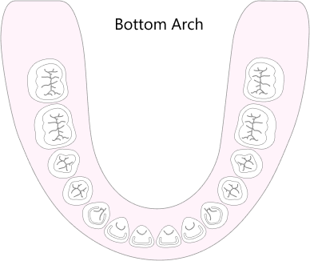

Dentures
Beginning of full mouth rehabilitation
A denture prosthesis is one of many ways to replace multiple teeth in an arch with great outcomes.
What to expect
-
 Multiple 1 Hr appointments
Multiple 1 Hr appointments
What it is
A denture can be used for
- Affordable replacement of teeth
- Esthetic and functional improvements
- Cheap alternative to complex rehabilitation procedures
However a denture
- Has poor retention and about 10% of the function of natural teeth
- Needs to be removed at night
- May need periodic maintenance by your doctor
- May need to be relined due to significant bone resorption
How it is accomplished
After tooth removal the process of denture fabrication begins with impressions of residual ridges.
 
After multiple fittings the final result will acrylic base that will support plastic teeth.
 
The discomfort of the new prostheses usually disappears within two weeks after the adjustments and delivery has been done
It is strongly recommended to add implants to increase denture retention and functionality
Materials
- Acrylic These prostheses are made of PMMA (poly-methyl-methacrylate) material. This type of acrylic is strong enough to support the chewing forces while offering a great degree of reparability and flexibility in future modifications. However the use of clasps and retentive features is limited.